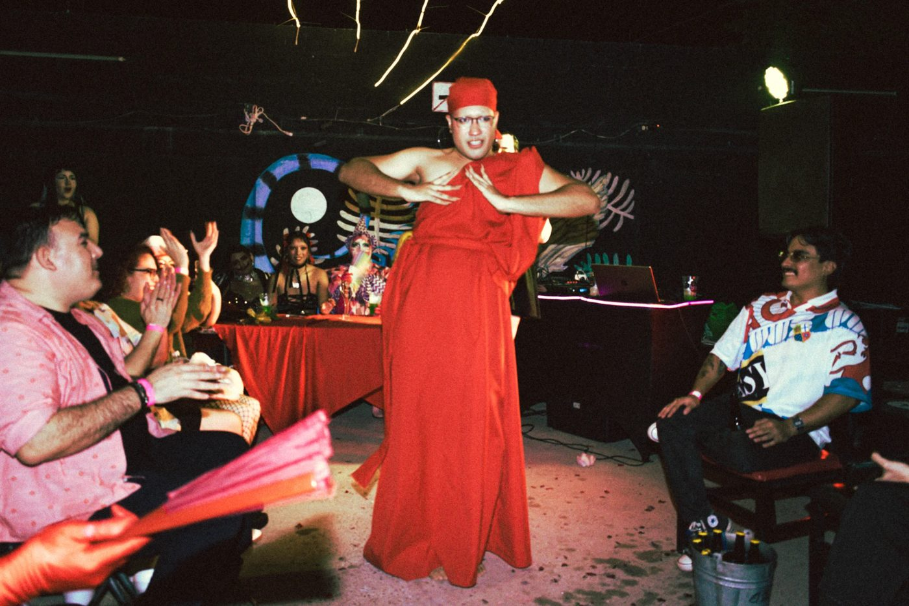

April Cosmic
arma escena.
Tucson, AZ / Ciudad Obregón, SON
Ballroom, música, podcasts, imagen y palabras.
En el desierto también pasan cosas grandes. Casi siempre porque alguien decidió no esperar.

Nací en Tucson, crecí en Obregón, y cuento historias a los dos lados de la frontera.
Disponible para colaborar ↘
info@aprilcosmic.comEn 2023 fundé House of Cosmic, la casa pionera del ballroom en Sonora, porque en Obregón faltaban lugares para bailar sin pedir permiso. Desde ahí organizo balls, talleres y conversaciones. Lo demás sale de la misma necesidad: produzco podcasts, mezclo como DJ, hago foto y video, y escribo. Nací en Tucson y vivo en Ciudad Obregón desde los nueve años.
Conóceme ↗Ballroom
Let the population become a community. La casa de ballroom que fundé en Sonora: House of Cosmic.
houseofcosmic.com ↗ 02Podcasts
UltraLocal y Jutonio: conversaciones de la escena local, y comedia desde otro planeta.
Escuchar ↗ 03DJ
Disco de ayer y de hoy: clásicos de los 70, edits de nu disco y pop de club pasado por el filtro de la pista.
Escuchar ↗ 04Imagen
Foto y video: retrato, cuerpo, color y noche.
Ver obra ↗ 05Escritura
Escribir es como lo proceso todo. Mis ensayos en video viven en YouTube; uno llegó a 150 mil vistas en un canal que empezó de cero.
YouTube ↗¿Necesitas foto, video o comunicación para tu proyecto? CosmoMateria ↗
2023
Nace House of Cosmic
420
Personas en 3 balls
5
Balls como jueza, en 3 ciudades
2026
Reconocimiento del Instituto Sonorense de Cultura
Trabajemos juntes ↘
WhatsApp o llamada